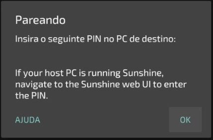
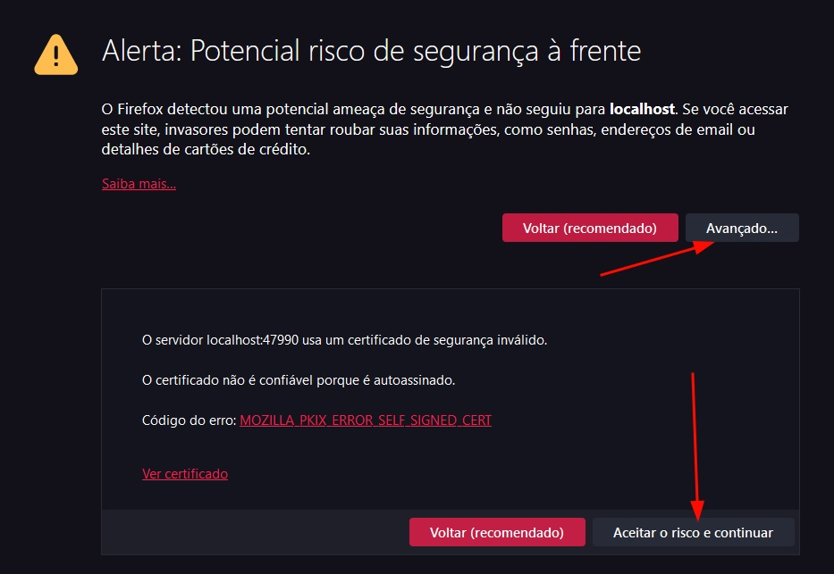
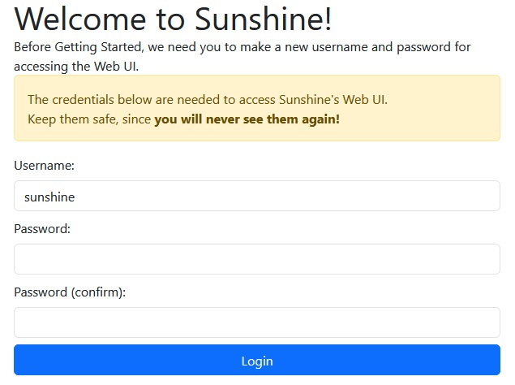
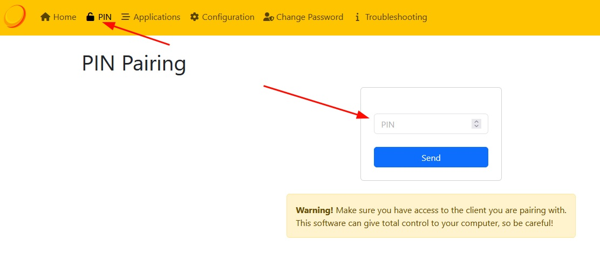
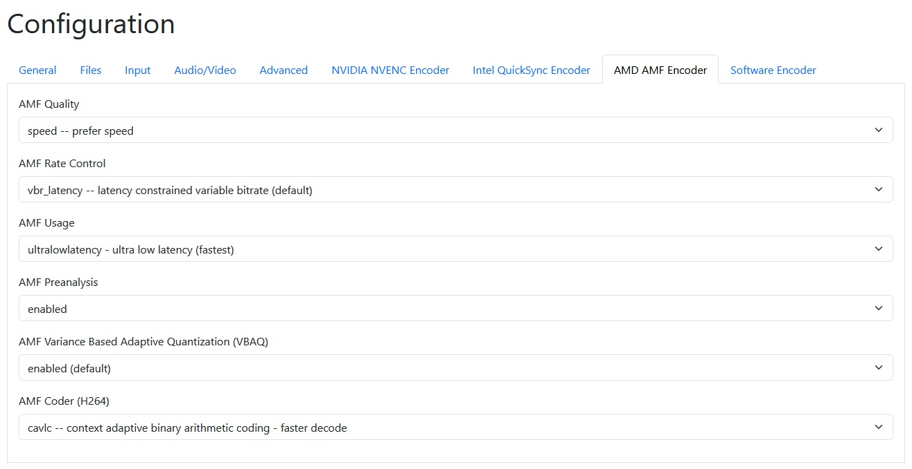

Introdução - Já pensou em rodar Cyberpunk no seu celular?
Não! Isso não é nenhum exagero, é exatamente o que poderemos fazer aqui e na verdade é bem fácil, e funciona de uma maneira bem simples: Seu pc vai rodar o jogo e seu celular vai mostrar na tela e receber os comandos, compre um Gamesir X2 Pro e seja feliz.
E o que é necessário para isso?
Bom, primeiro precisamos de um servidor de streaming instalado no seu PC, para este guia utilizaremos o Sunshine. Basta baixar e o arquivo sunshine-windows-installer.exe instalar como qualquer outro programa (não precisa marcar ou desmarcar nada). O programa tem uma documentação disponível aqui
Depois precisamos de um cliente de streaming, para este guia utilizaremos o Moonlight Game Streaming, basta instalar como qualquer outro aplicativo da Playstore.
Configurando
Assim que ambos estiverem instalados basta abrir o Moonlight no celular e selecionar o seu computador.

Assim que selecionar o seu computador o Moonlight irá retornar um código de pareamento como na imagem abaixo:
(obviamente eu censurei o PIN, mas vai aparecer no seu)
Dê 2 cliques no aplicativo do Sunshine no seu computador, e vai abrir uma página parecida com a página abaixo no seu navegador, apenas aceite, não há risco de segurança real aqui.
Insira um usuário e senha no campo abaixo:
As chances são que por padrão o Sunshine já vai reconhecer tanto o modo Big Picture da Steam quanto a Área de trabalho do seu pc. Mas agora precisamos parear o seu celular com o Sunshine.
Selecione PIN na navbar e depois insira o PIN que o seu aplicativo de celular mostrou, clique em Send e aguarde o pareamento.
Agora é só jogar!
Conecte o controle no seu celular, selecione a Steam e jogue o que você deseja!
Configurações opcionais
Caso você utilize uma placa de vídeo AMD e queira o mínimo de latência, eu recomendo colocar essas configurações no Sunshine:
Em seguida vá no aplicativo Moonlight no celular na opção Mudar configurações do HEVC selecione Prefira HEVC
Jogando com o monitor desligado utilizando um Virtual Display Driver
Ok, então você quer jogar no seu Windows com o monitor desligado? Fácil!
Baixe a última versão do Virtual Display Driver VDD.XX.XX.XX.XX.zip.
Após isso extraia este arquivo para uma pasta, e copie o arquivo option.txt dessa pasta para o diretório C:\IddSampleDriver\option.txt antes de instalar o driver!
Depois disso, rode o arquivo *.bat de dentro dessa pasta como Administrador.
Não instale o arquivo .inf! Abra o Gerenciador de Dispositivos, clique em qualquer dispositivo (lembre-se! Dispositivo, não categoria!), clique no menu Ação e clique em Adicionar hardware herdado.
Selecione Instalar o hardware que eu selecionar manualmente de uma lista (avançado) e depois selecione Adaptadores de vídeo.
- Clique em Com disco... e clique no botão Procurar.... Navegue até os arquivos extraídos e selecione o arquivo .inf
Pronto! Vá para as configurações de vídeo para personalizar a resolução dos monitores adicionais. Essas exibições aparecem no Sunshine, nas configurações do Oculus ou VR e devem poder ser transmitidas.
You can enable/disable the display adapter to toggle the monitors.